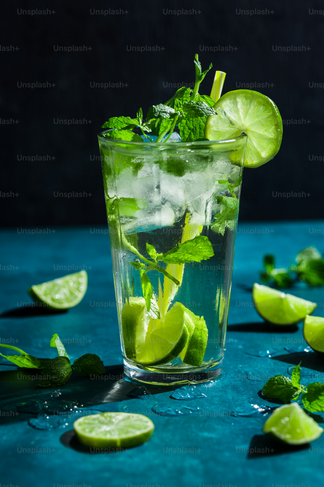

Cóctel de Día
El Mojito es un clásico cóctel de origen cubano, conocido por su sabor refrescante y balance perfecto entre dulzura, acidez y frescura. Tradicionalmente se prepara con ron blanco, hojas de hierbabuena (menta), azúcar, jugo de lima y soda, servido con hielo triturado. Su perfil ligero y aromático lo convierte en una opción ideal para días calurosos o como aperitivo antes de una comida. Además de ser delicioso, el Mojito es apreciado por su simplicidad y versatilidad, ya que puede adaptarse con frutas o licores adicionales para crear variaciones modernas.